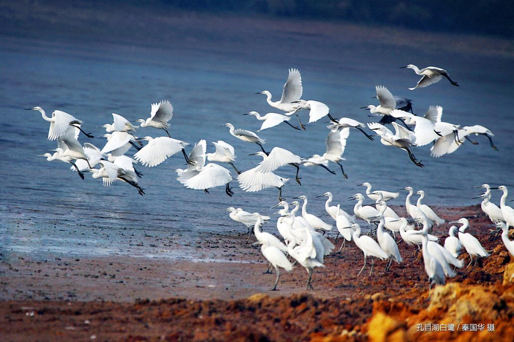

刘佳。保持好奇，认真学习，在一次次练习和项目实践中积累能力。


ABOUT ME
刘佳，软件工程专业学生。
我的学习方向围绕程序设计、软件开发、数据库、系统分析与工程实践展开，希望把课堂知识真正转化成能解决问题的作品。
华东交通大学，一所以交通为特色、轨道为核心的教学研究型大学。
软件工程，关注从需求分析、编码实现到测试维护的完整软件生命周期。



MY UNIVERSITY
华东交通大学
华东交通大学坐落在江西南昌，是一所以交通为特色、轨道为核心、多学科协调发展的教学研究型大学。
学校具有鲜明的工科底色和交通行业特色，校园环境依山傍水，既有浓厚的学习氛围，也有适合成长和实践的空间。
学校名称
华东交通大学
英文名称
East China Jiaotong University
学校简称
华东交大 / ECJTU
所在城市
江西省南昌市

SOFTWARE ENGINEERING
我的专业：软件工程
软件工程不是只会写代码，它更强调工程化思维：怎样理解需求、设计系统、组织代码、测试质量，并让软件长期稳定运行。
程序设计
学习编程语言、算法与数据结构，把思路转化为清晰可靠的代码。
数据库
理解数据建模、查询设计和数据管理，为系统提供稳定的数据支撑。
应用开发
关注前端界面、后端逻辑和接口协作，完成真正可使用的软件产品。
软件质量
通过测试、文档和版本管理，让项目更稳定、更规范、更易维护。
TEXT INTRODUCTION
文字版介绍
下面这一段可以直接用于自我介绍、网页说明、作业展示或演讲稿开头。
大家好，我叫刘佳，来自华东交通大学软件工程专业。华东交通大学坐落于江西省南昌市，是一所以交通为特色、轨道为核心、多学科协调发展的教学研究型大学。学校校园环境优美，学习氛围浓厚，具有鲜明的工科特色和实践导向。我的专业是软件工程，主要学习程序设计、数据库、软件开发、系统分析、软件测试和项目管理等内容。通过专业学习，我希望不断提升自己的编程能力、工程思维和团队协作能力，把所学知识应用到真实项目中，逐步成长为一名基础扎实、善于实践的软件工程专业人才。
HELLO FUTURE
在真实校园里学习，在软件工程中成长。
我是刘佳，来自华东交通大学软件工程专业。愿每一次学习与实践，都能让我离更扎实的技术能力和更清晰的未来近一点。